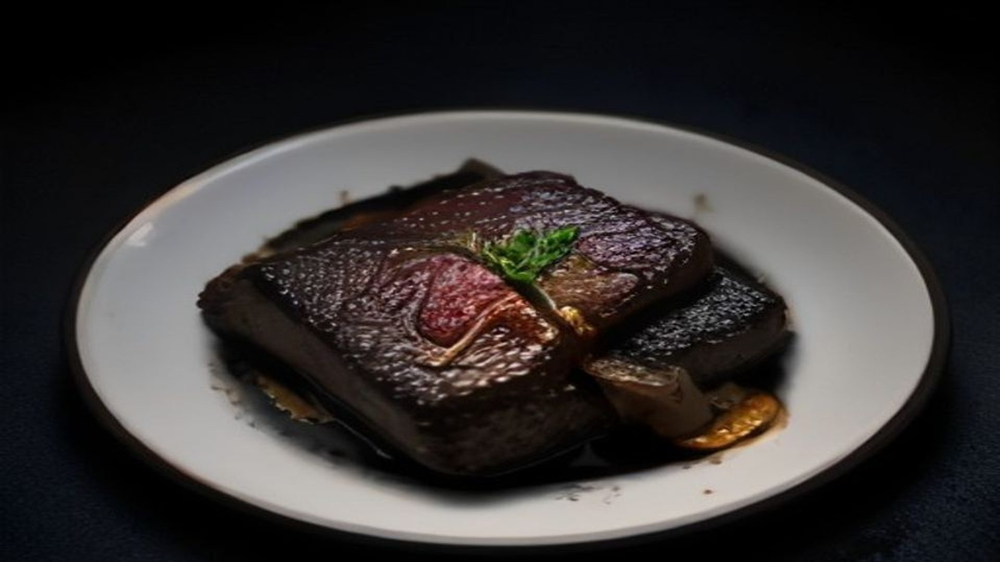
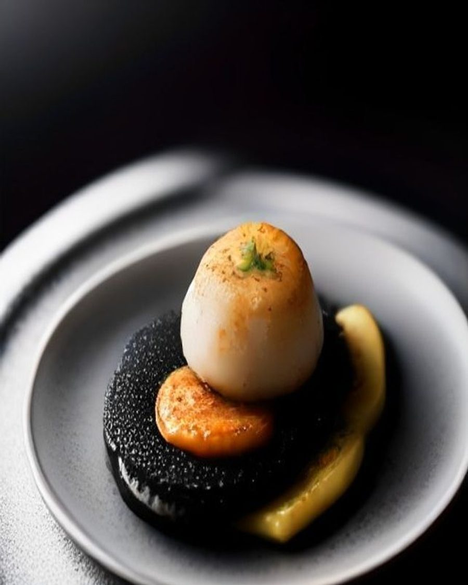
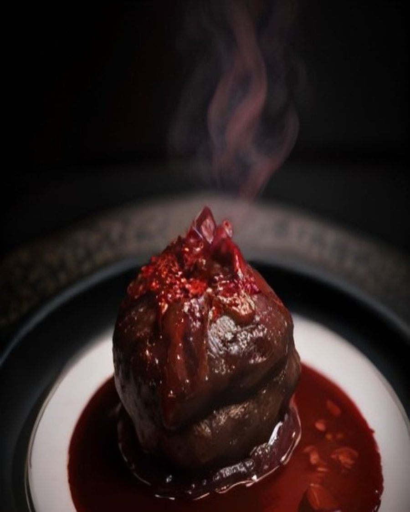

The tasting menu
Nine courses,
one long evening
Ingredients picked the same morning, cooked over fire, plated in front of you at the pass.

The tasting menu
Ingredients picked the same morning, cooked over fire, plated in front of you at the pass.
01 / 04
Chef's Special
Three plates the kitchen is cooking right now. They change when the market changes, usually on a Tuesday.


Main course
Nine hours in the oven, charred onion petals, sherry reduction
Guests
4.8 averageGoogleTripAdvisorOpenTable

Our story
We opened in 2014 with eleven tables and a borrowed charcoal grill. Eleven years later there are still eleven tables.
Write the menu after the market, not before it.

Reservations
The room holds twenty-eight. Friday and Saturday go quickly, and the chef's counter is released on the first of each month.
Walk-ins welcome at the bar, every service.